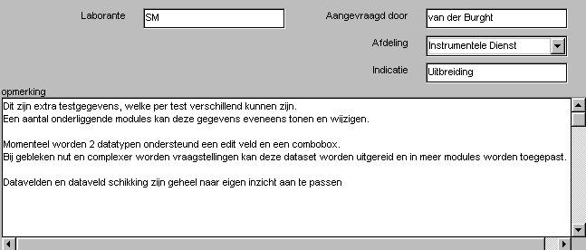

Extra Testgegevens per Test
Per (afgenomen) test kan door de testleider een extra set alfa-numerieke gegevens worden ingevoerd. Enkele typische voorbeelden hiervan zijn: de aanvragend arts, de testleider en aanvraag indicatie. De gebruiker bepaalt geheel zelf welke extra gegevens moeten worden bijgehouden. In feite zijn deze gegevens een uitbreiding op de reeds beschikbare tekstregel "omschrijving".

De gegevens zijn in te vullen, te wijzigen en te bekijken, in de database-schil MidOrg.
Ook in sommige modules zijn deze (zelfde) gegevens te bekijken en te wijzigen.
Deze gegevens worden bij de testresultaten in het rapport afdgedrukt (tenzij in de "TestOrganizer / Instellingen / Rapport" het vakje niet is aangekruist).
Vooralsnog zijn deze gegevens niet beschikbaar in het exportbestand.
Opzetten test-specifieke gegevens
Er wordt bewust gesproken van "opzetten" in plaats van "wijzigen" omdat u zich dient te realiseren dat deze set gegevens éénmalig opgezet moet worden naar uw eigen wensen en daarna maar zeer beperkt gewijzigd mag worden. Dit omdat de gegevens voor alle reeds afgenomen en toekomstige testen geldig zijn en moeten blijven.
Om deze reden is ook bewust niet voor een geïntegreerde editor gekozen, maar dient u de wijzigingen met een eenvoudige tekstverwerker (bijv. notepad of wordpad) uit te voeren.
Bedenk eerst wat u wilt (eenmaal aangemaakte velden mogen niet worden verwijderd, wel onzichtbaar worden gemaakt).
Momenteel worden de volgende velden ondersteund:
- edit velden (vrij in te voeren velden van 1 regel lang)
- comboboxen (edit veld, en een lijst van vooraf gedefiniëerde mogelijkheden)
- 1 memoveld (vrije tekst meerdere A4's groot)
De exacte layout wordt automatisch door het programma verzorgd, waarbij de volgorde van de velden, de globale positie van de velden, het aantal rijen en kolommen door de gebruiker worden gedefiniëerd. Het memoveld wordt altijd onderaan geplaatst.
De actieve programma-module bepaald of de naam van een veld links van het veld danwel net boven het veld staat.
Er zijn modules, welke vanwege de beperkte ruimte noodzakelijkerwijze een andere indeling in rijen en kolommen moeten kiezen, dan welke aangegeven door de gebruiker.
Voorlopig kunnen tot 25 velden worden gedefiniëerd door de gebruiker, de overige zijn vooralsnog gereserveerd voor het gebruik in rekenfuncties (beheer bij de ID).
De velddefinities worden opgeborgen in het bestand <programma path>\testgeg.ini.
Het wijzigen van dit bestand dient te gebeuren met een eenvoudige tekst-editor (notepad, wordpad, o.i.d.).
De opbouw van dit ini-bestand wordt uitgelegd in onderstaand voorbeeld (cursief gedrukte delen zijn letterlijke teksten uit het ini-bestand):
Allereerst de definitie van de globale lay-out, (deze lay-out wordt ook gebruikt in de rapport-generatie).
- het aantal velden (exclusief een eventueel zichtbaar memoveld)
- het aantal kolommen
- het aantal rijen[Velden]
aantal=6
nkol=3
nrow=3Vervolgens of het memo zichtbaar is (0=onzichtbaar, 1=zichtbaar) en zoja de titel van het memo[memo]
name=opmerking
visible=1Nu de definities van de afzonderlijke velden, de velden dienen opeenvolgend genummerd te zijn, tot een maximum van 25.
De titel (=name) van het veld, al dan niet zichtbaar (0/1), het type veld (0=edit veld, 1=combobox) en de positie. De positie geheel linksboven is 1, vervolgens wordt de eerste kolom geheel naar beneden doorgeteld, waarna wordt begonnen aan het bovenste element van de volgende kolom.[veld1]
name=Laborante
visible=1
kind=0
pos=1Voor de combobox moeten ook nog de voorgedefiniëerde velden worden ingevoerd. Allereerst het aantal (itemn) en vevolgens de afzonderlijke elementen (in dit geval item1 t/m item4)[veld3]
name=Afdeling
visible=1
kind=1
pos=5
itemn=4
item1=Ortopedie
item2=Neurologie
item3=Kindergeneeskunde
item4=Psychologie
Velddefinities Wijzigen (data-integriteit) 
Bij het wijzigen van de velddefinites (nadat deze ook daadwerkelijk voor data-invoer zijn gebruikt) dienen strikte regels in acht te worden gehouden om de data integriteit te waarborgen, immers de antwoorden worden kaal opgeslagen op basis van het veldnummer.
- wijzig nooit het veldnummer van een veld
- is een veld niet meer nodig, verwijder het dan niet maar maak het onzichtbaar
- het is toegestaan de voorgeprogrammeerde regels van een combobox te wijzigen
- het is toegestaan om een edit-veld te wijzigen in een combobox en omgekeerd
- de titel (name) van een veld mag zondermeer worden gewijzigd
- positie van een veld mag zondermeer worden gewijzigd
- het aantal rijen en kolommen mag worden gewijzigd
De velden vanaf nummer 26 zijn gereserveerd voor systeem-vaaiabelen. Hierbij kan worden gedacht aan bepaalde rekenfunctie instellingen, welke per opgenomen test verschillend zijn.
Voorbeeld vaatfunctie onderzoek, na afloop geeft de laborante aan welke van de metingen geldig zijn en welke niet. Deze gegevens worden bewaard in veld 26.
Het beheer van deze gereserveerde veldnummers ligt bij de ID.